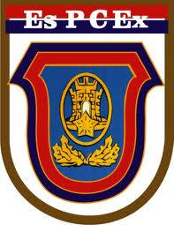
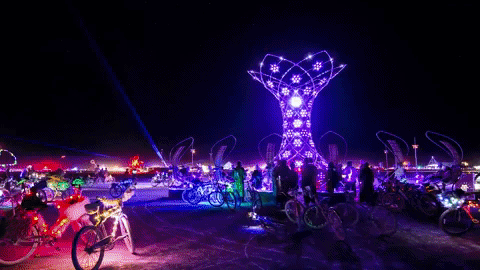

CURRICULUM VITAE

Beatriz Damasceno Fernandes
Endereço, E-mail e Contatos
Rua Raimundo Nonato de Castro, Residencial Boa Vista, Bloco J, Apto 107, Ponta Negra - Manaus, Am - Brasil
Nascimento: 14 de outubro de 2001
Mobile/Whatsapp: (92)99361-2266
E-mail:beatriz.damasceno.f@gmail.com
Qualificações Acadêmicas
Histórico de Experiência Acadêmica
Idiomas (spoken/written/reading)
Cursos Relevantes
Outras Areas de Interesse
Maior Ato de Coragem Realizado em Vida
Maior Medo da Vida
Insetos! Insetos são o meu maior medo na vida, mesmo que não saiba o motivo disso. Sempre que vejo algum, como uma aranha ou
uma borboleta, corro imediatamente!
Dia em que Tive Mais Sorte na Vida
Quando tinha 7 anos, escorreguei e caí sobre um copo de vidro, o qual cortou meu pé e o meu tendão. Levei 17 pontos no feri-
mento e perdi muito sangue, chegando quase a óbito, mas não foi necessário nem receber doação sanguínea, o quefoi uma grande
sorte!
Gosta de Animais de Estimação?
Sim, gosto muito de animais, principalmente cães, mas não possuo nenhum animalde estimação, pois minha mãe não gosta de tê-los
dentro de casa. Ela diz que fazem muita bagunça. Meu maior desejo é morar sozinha para criar quantos cachorros eu puder acolher.
Qual seu time de coração? Quando começou a torcer para tal?
Bom, não possuo um time, já que não assisto muito futebol, mas minha família inteira é flamenguista. Quando há jogos, todos bus-
cam se reunir para assisti-los,inclusive eu, mesmo não entendendo muito bem o que está acontecendo neles.
Você tem heróis? Quem seria? Por que gosta tanto dele?
Considero minha mãe como minha heroína, pois ela já passou por muitas dificuldades para criar a mim e ao meu irmão sozinha, con-
quistando tudo o que conseguiu até hoje "se virando".
Informe algumas músicas favoritas suas
Informe alguns vídeos do youtube favoritos seus
Você tem sonhos? Pode enumerar alguns?


descrição do festival